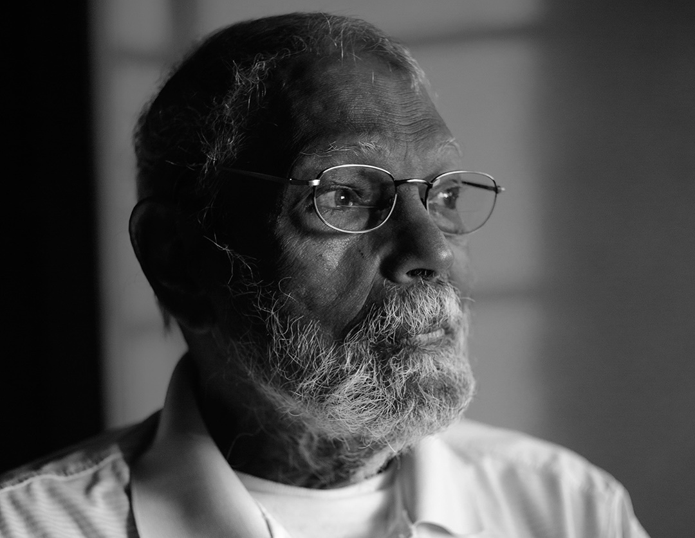
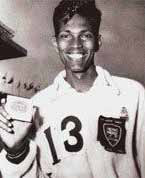
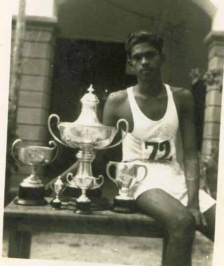
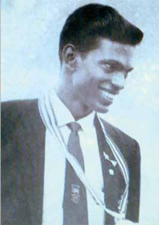
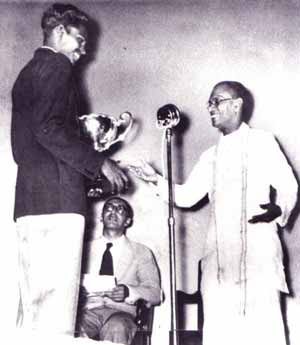
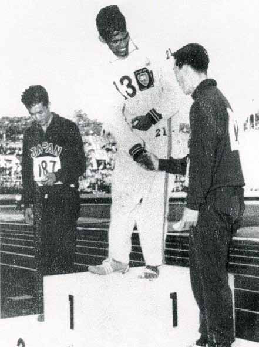

Beyond the Medals:
Beyond the Medals:
Jaffna Monitor hellojaffnamonitor@gmail.com 8 D r. Nagalingam Ethirveerasingam, the pioneering athlete who secured Ceylon's first gold medal at the 1958 Asian Games in Tokyo, died at 89 in Los Angeles, USA. Born in a modest dwelling in Periyavillan on the Jaffna Peninsula, his ascent to global recognition stands as a powerful testament to the resilience and indomitable spirit of the Sri Lankan Tamil community. His legacy transcends his athletic achievements, Beyond the Medals: By: Our Reporter The Multifaceted Legacy of Dr. Nagalingam Ethirveerasingam Tribute

Jaffna Monitor hellojaffnamonitor@gmail.com 9 symbolizing a community's perseverance and steadfast resolve in challenging circumstances. Born in 1934, Ethir, as he was affectionately known, overcame significant odds. His humble beginnings in a one-room hut did not deter him from setting his sights high— quite literally. Self-taught from pictures in an athletics book, he made a vow at a young age while watching the 1948 Olympics to one day compete on the world stage. His dreams materialized sooner than expected when he represented Ceylon at the 1952 Helsinki Olympics at merely 17 years old, a prelude to a storied athletic career. Ethir's gold medal victory at the 1958 Tokyo Asian Games was not merely a personal achievement but a historic milestone for Ceylon. This triumph coincided with a period of severe unrest back home, as his homeland was embroiled in the 1958 anti-Tamil riots—a turmoil Ethir was unaware of until his return. He famously remarked in an interview that while he, a member of the Sri Lankan Tamil ethnic minority, was winning a gold medal for the country, the majority of that same nation was perpetrating violence against its own people. This stark contrast between his sporting success and the senseless violence at home profoundly affected him, shaping his subsequent endeavours in conflict resolution and community rebuilding. A 17-year-old Nagalingam Ethirveerasingam with the medals he won at the 1951 Ceylon AAA National Meet, showcasing the early promise of a future athletic champion.


Jaffna Monitor hellojaffnamonitor@gmail.com 10 At the 1962 Jakarta Asian Games, Dr Ethirveerasingam secured the silver medal, further cementing his status as a distinguished athlete. Previously, at the 1954 Manila Asian Games, he achieved a remarkable feat by jumping the same height of 1.95 meters as the gold, silver, and bronze medalists. Despite this accomplishment, he was placed fourth due to having more misses than the other competitors. Ethir's achievements on the track were paralleled by his academic pursuits. After transferring to St. Joseph's College in Colombo to be closer to his coach, he won a scholarship to the University of California, Los Angeles (UCLA), where he later earned a master's degree and a PhD. His educational background led him to roles far beyond the track, teaching and conducting research in Sierra Leone, Nigeria, and Papua New Guinea. Despite his global recognition, Dr. Ethirveerasingam's connection to his homeland remained unwaveringly strong. In 1994, as many Sri Lankan Tamils were fleeing the escalating conflict—often at great risk and significant expense—he resolutely chose to return. At the age of 60, he went back to lend his expertise at the University of Jaffna during the peak of the civil war. His involvement extended far beyond academic responsibilities; he dedicated himself to volunteering in devastated regions, making significant contributions to educational, sports, and humanitarian projects. Beyond these endeavours, his most defining role emerged as a peacemaker and educator. His mediation efforts during the Sri Lankan civil war and his passionate advocacy for peace and Nagalingam Ethirveerasingam receives acclaim from former President SWRD Bandaranaike


Jaffna Monitor hellojaffnamonitor@gmail.com 11 reconciliation earned him widespread respect across all factions of the conflict. In 1998, a significant honour was extended to Dr Nagalingam Ethirveerasingam by Sri Lankan President Chandrika Kumaratunga Bandaranaike, who offered him the prestigious 'Deshabandu.' However, he declined the honour in a profound display of solidarity and principle. In his letter to President Bandaranaike, he expressed his reasons, stating, "I cannot in good conscience accept such a title when my people are suffering and the war is continuing." This decision underscored his deep commitment to being part of his brethren's struggle, emphasizing his unwavering dedication to the well-being and justice of his community during a conflict. Ethir's life was marked by significant challenges. His candid discussions about the racial discrimination he faced, even as a celebrated athlete, illuminate the complexities of his experiences. He once disclosed that, despite qualifying, he was initially not selected for the Asian Games, a decision he attributed to systemic discrimination by the then Sri Lankan government. He managed to overcome this obstacle through his unwavering resilience and with the support of his community, media advocates, and many kind- hearted Sinhalese individuals who rallied behind him. Survived by his wife, three children, and eight grandchildren, Dr. Nagalingam Ethirveerasingam's story transcends that of a mere sportsman to embody a beacon of hope. His legacy is a powerful testament to the transformative impact of sports and education, demonstrating how one can rise above societal and personal challenges to forge a path of individual success and societal betterment. His determination, educational pursuits, and deep commitment to his roots have crafted a legacy that will endure for generations. At the Jaffna Monitor, we join the many who are mourning his passing, remembering him not only for his monumental achievements but for the indelible mark he left on our hearts and our history. May 25th, 1958. Nagalingam Ethirveerasingam receives the gold medal at the Asian Games in Tokyo, completely unaware of the pogrom unfolding back on the island.
